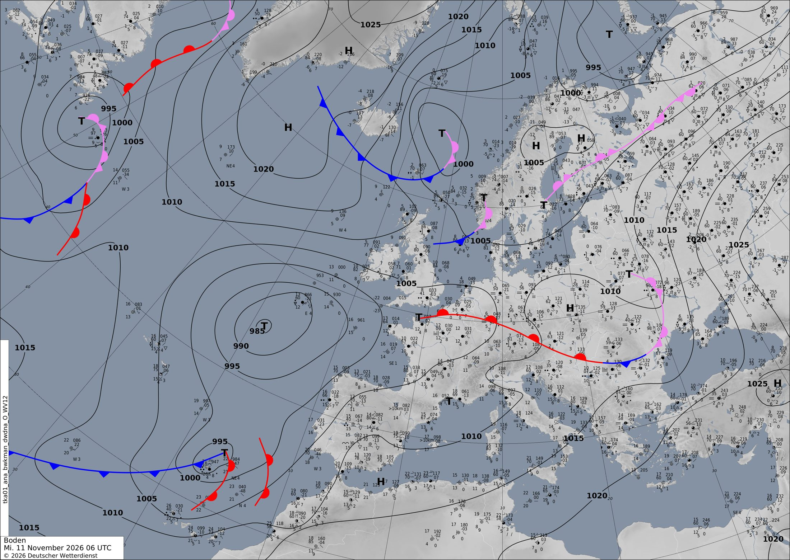

Una borrasca atlántica riega el sur peninsular y el frío baja hacia Francia
Una borrasca profunda y lenta al oeste de la península empuja hoy lluvias fuertes hacia Andalucía y el sur de Francia. Después su energía se va al Mediterráneo mientras el aire frío del norte entra en Francia y la presión sube hacia el fin de semana.
Europa y el Atlántico
La protagonista del día es una borrasca de 983 hPa en pleno Atlántico, a unos 450 km al oeste de la península. En la carta de análisis del DWD de las 06 UTC aparece como una T de 985 hPa rodeada de muchas isobaras cerradas. Justo encima, en el mapa de 500 hPa, hay una bolsa de aire frío cerrada de 542 dam. Es decir, la borrasca está «apilada»: tiene el mismo centro abajo y arriba. Por eso se mueve despacio, como una peonza que gira casi en el sitio. Mira aquí cómo coinciden los dos centros.
Por el flanco sur de la borrasca corre la corriente en chorro, con núcleos de unos 230 km/h que apuntan a Portugal. Ese río de viento en altura empuja aire húmedo y templado desde el sur hacia la península y Francia, y ahí nace una larga banda de lluvias que va de Marruecos al sur de Francia. Fíjate en la banda de lluvia de esta noche.
Lo que pasa después, día a día:
- Mañana (jueves): la borrasca empieza a rellenarse y suelta un centro secundario sobre Asturias, de 992,6 hPa a las 00 UTC. Mientras tanto, otra borrasca de 988 hPa se ahonda al oeste de Noruega.
- Pasado mañana (viernes): la energía cruza al Mediterráneo. Al este de los Alpes se forma una borrasca de 987,5 hPa, con hasta 90 mm en 12 horas cerca del norte del Adriático. En el norte, la borrasca escandinava baja a 981,7 hPa sobre Suecia. Encima del Báltico tiene una bolsa fría de 510 dam y un chorro de 234 km/h. Por detrás, el aire frío del norte baja hacia Europa central. Mira la bolsa fría sobre el Báltico.
- Sábado (00 UTC): se instalan altas presiones sobre Londres (1020 hPa) y al noreste de los Alpes, con tiempo más tranquilo y frío en el centro del continente. En el Mediterráneo quedan bajas débiles sobre Córcega y el Adriático, con lluvias fuertes cerca de los Balcanes (hasta 96 mm).
A +72 h el modelo dibuja además un chorro muy intenso, de 255 km/h, al norte de Azores, con nuevas borrascas detrás. Es la próxima pieza del puzle, pero a tres días su posición todavía puede cambiar bastante.
En península ibérica y Baleares
Hoy (miércoles) la península queda en la cara delantera de la borrasca atlántica, con vientos del sur. Ese viento sube aire cálido y húmedo desde África. Por eso, a mediodía el modelo llega a 30,5 °C en algún punto del sur o del este, un valor muy alto para noviembre. Para que llueva, ese aire húmedo tiene que subir (de dónde sale la lluvia). Lo empujan hacia arriba la banda de nubes de la borrasca y el relieve. Hasta las 12 UTC caen hasta 53,6 mm en 12 horas. Entre las 12 y las 00 UTC llega lo más fuerte: hasta 84 mm sobre Andalucía occidental. A mediodía el viento alcanza rachas de unos 74 km/h. Mira dónde se concentra la lluvia.
Mañana (jueves) el centro secundario sobre Asturias mantiene el tiempo revuelto. Durante el día siguen cayendo hasta 48 mm en 12 horas, y el viento llega a 69 km/h. En la madrugada del viernes la borrasca y su vaguada en altura están ya sobre Galicia.
Pasado mañana (viernes) cambia el escenario. El aire frío en altura llega sobre un Mediterráneo todavía templado, y la energía para tormentas (CAPE) sube hasta 2264 J/kg sobre Baleares. Es el ingrediente de las tormentas: chubascos fuertes, de hasta unos 39 mm en 12 horas. Mira el CAPE sobre Baleares.
El sábado a medianoche la presión ya está entre 1010 y 1020 hPa y el aire es más frío. En el interior pueden darse heladas, con hasta −2,8 °C a medianoche. Baleares sigue con inestabilidad (1808 J/kg) y algún chubasco fuerte, de hasta 28 mm.
En Francia
En Francia la misma banda de lluvia llega por el sur. Hoy caen hasta 25,8 mm en la mañana. A mediodía hay algo de inestabilidad (hasta 1392 J/kg), así que en el sur no se descartan tormentas. En la carta del DWD de las 06 UTC se ve además un frente cálido que cruza el norte de Francia hacia los Alpes. Marca la frontera entre el aire templado del sur y el más fresco del norte.
Mañana (jueves) es el día más húmedo. Durante la jornada se acumulan hasta 59,3 mm en 12 horas. Por el mapa, lo más fuerte cae en el sur y el sureste, donde el viento del sur choca con el relieve. Mira la lluvia del jueves.
Pasado mañana (viernes) entra el cambio importante: el aire frío que baja de Escandinavia. A 850 hPa (unos 1500 m) se pasa de valores de hasta 14 °C hoy a −3,4 °C en algunas zonas. Entre las bajas presiones del Mediterráneo y la presión que sube por el norte, el viento se refuerza hasta 53 km/h el viernes a mediodía. Es un esquema que suele favorecer vientos regionales como el mistral. El sábado a medianoche la presión llega a 1020 hPa y en las montañas el modelo marca hasta −10 °C.
París y alrededores: el miércoles, 11–13 °C a medianoche y unos 14–15 °C a mediodía. Puede caer alguna gota por la mañana (0,6 mm como mucho) y el viento es flojo, de hasta 13 km/h. El jueves, 8–11 °C a medianoche y solo 8–9 °C a mediodía, porque llega aire más frío. Lluvia casi nula (0,1–0,2 mm) y viento de hasta 20 km/h por la tarde. El viernes, 4–5 °C a medianoche y 9–10 °C a mediodía, seco y con viento de hasta 14 km/h. El sábado a medianoche, 2,5–3,5 °C, seco y con calma (10 km/h). La presión sube de 999 a casi 1020 hPa.
Lección del día: Presión atmosférica e isobaras
Hoy vamos a leer las isobaras. Son las líneas que unen puntos con la misma presión y en estos mapas van cada 4 hPa.
- Mira aquí la borrasca atlántica de hoy. Cuenta los anillos cerrados alrededor de la B. Cuantos más anillos y más juntos estén, más profunda es la borrasca y más fuerte sopla el viento a su alrededor.
- Pasa al paso +24. Verás que los anillos ya no son tan redondos y que aparece una segunda B sobre Asturias: la borrasca se está estirando y rellenando.
- Ahora busca París y sigue su presión: 1003 hPa hoy, 1001 el jueves, 1008 el viernes y casi 1020 el sábado. Mira el mapa del sábado: sobre Londres hay una A de 1020 hPa.
- Conclusión: si la presión sube de forma continuada, se acerca un anticiclón. Eso suele traer menos lluvia y vientos más flojos, aunque también noches más frías.
Ponte a prueba
3 preguntas sobre el tiempo de hoy. Puedes mirar el mapa antes de contestar.
¿Por qué la borrasca atlántica de hoy se mueve tan despacio?
En el mapa de 500 hPa hay un centro cerrado de 542 dam casi encima del centro de superficie de 983 hPa. Una borrasca apilada así apenas tiene viento en altura que la arrastre. Mira aquí.
La presión en París pasa de unos 1003 hPa hoy a casi 1020 hPa el sábado. ¿Qué significa?
Cuando la presión sube de forma continuada, se acerca un anticiclón: el sábado hay una A de 1020 hPa sobre Londres. Mira aquí.
¿Dónde es más probable que haya tormentas en la madrugada del viernes?
La carta oficial
Análisis de superficie del servicio meteorológico alemán (DWD) válido el 11/11/2026 a las 06 UTC, dibujado por meteorólogos a partir de observaciones. Aquí sí hay frentes: azul con triángulos, frío; rojo con semicírculos, cálido; morado, ocluido. Las borrascas son T y los anticiclones H. Cómo leer esta carta.
